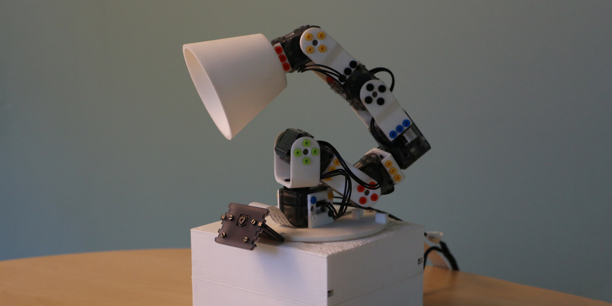

I played a key role in the Poppy Project launched in 2012. It was initiated during Matthieu Lapeyre’s PhD Thesis with Pierre Rouanet and supervised by Pierre-Yves Oudeyer. We focussed on developing open-source robotics platforms designed to enhance education, research, and creativity for diverse applications, from art to science.
As part of the core team, I contributed to the design and development of several robots, including the Poppy ErgoJr which was specifically tailored for educational purposes. Poppy ErgoJr, a low-cost, 6-DOF robotic arm, providing students with an interactive platform to experiment with robotic programming. Additionally, we developed a browser-based simulation of the ErgoJr, allowing students to test their code without needing a physical robot directly in the browser. Our robots were used in French schools to teach programming, robotics, and AI concepts to students and led to the formation of the Poppy Education project.
My involvement in the Poppy Projects honed my skills in developing scalable open-source solutions for education.